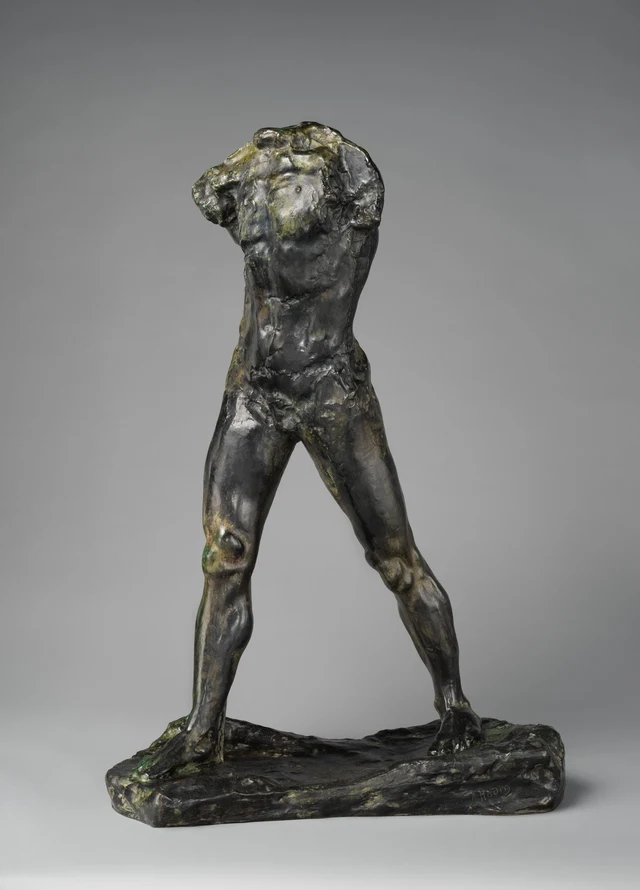
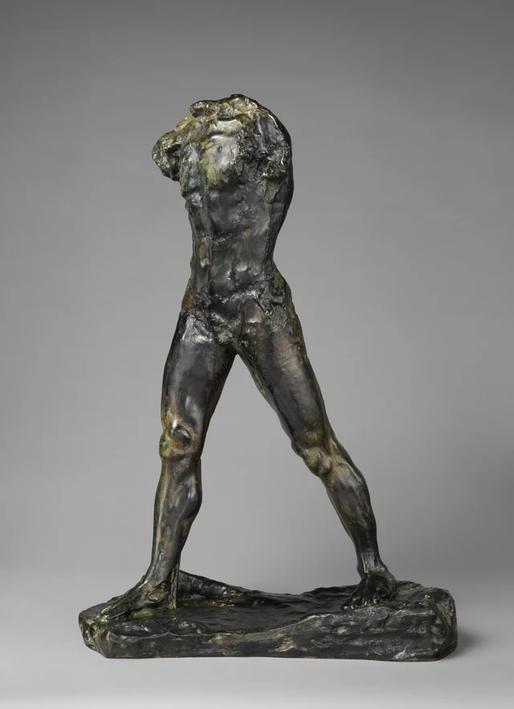
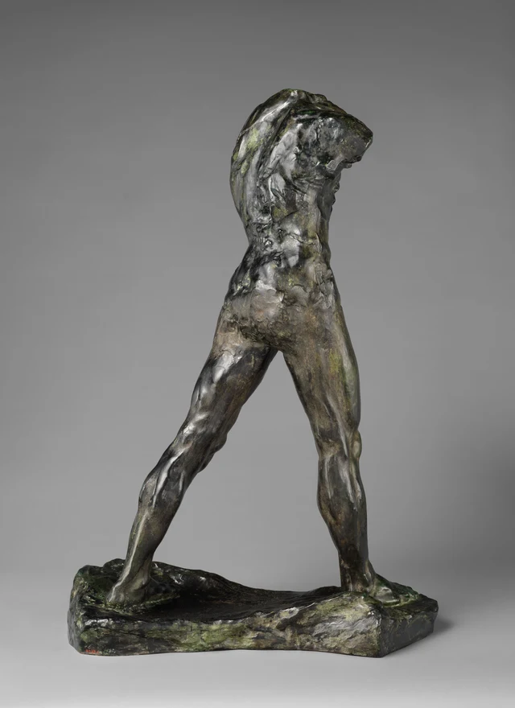

二本の脚はすでに開いている。けれども上体は、そのちょうど真ん中に落ち着いてはいない。
画面左側のすねは垂直に近く、足は左手前へ伸びる。右側の脚は斜めに大きく開き、つま先は台の反対側の端に近い。脚の間には、背の高い、幅のある三角形の空間ができている。その頂点から上へ目を向けると、腹部が細くなり、胸はまた別の側へ向きを変える。視線の行方を教える頭も、歩みに調子をつける腕もない。それでも、この身体には前へ進む勢いがある。
ロダンは、各部分の間に歩く動きをつないでいる。脚が開く距離、腰腹部のずれ、胸の回転は、同じ方向を繰り返さない。それなのに、力を合わせてこの一歩を成り立たせている。

19世紀末、ロダンは工房に残していた人体の習作を再び使い始めた。《洗礼者聖ヨハネ》の研究段階で作った胴と脚を組み合わせ、小型の石膏版を1900年にパリのアルマのパヴィリオンで展示した。古い習作が新しい作品の一部になり、接合すること自体が創作にもなる。制作中に隠しておかなければならない工程というだけではない。ロダン美術館：複製、断片、組み合わせ
今見ている青銅像には頭も腕もないが、ロダンが完成作として認めた作品だ。人体を見せると同時に、その人体がどう組み立てられているかも見せている。メトロポリタン美術館の作品解説 この完成しているという感覚を理解するために、まず何も補わず、すでにある部分がどれだけの仕事をしているか見てみよう。
一 足は台の上にとどまる。歩みはどこから生まれるのか
まず画面左側の脚を、下へたどってみよう。
太ももは股関節から斜め外へ向かい、膝で輪郭が少し折れ、すねは下に向かって細くなる。足首は細いが、足はそこから長く伸びて、最後に台へつながる。もう一方の脚は股関節から画面右下へ開き、太もも、すね、足首がより長い斜めの流れをつくる。二本の脚は同じ高さから始まり、違う道筋で地面に届く。
両足の隔たりだけを見ていると、脚を開いて立っている人に見えやすい。胸や腹まで視野に入れると、その立ち方はさほど左右対称ではなくなる。胴は両足の中点にまっすぐ乗っておらず、胸の向きも脚が開く面と完全には一致しない。下半身が開き、上半身は向きを変える。身体の中に、まだ均されていない方向のずれが生まれている。
その違いがあるため、目は中央にとどまりにくい。差し出された足から膝へ、太ももに沿って股関節へ戻ると、細くなって位置のずれた腰に導かれ、胸へ向かう。ここでの「前へ」は一本の矢印では示されず、いくつもの形が受け渡しながらつくり出している。一歩の距離は下方に、回転の力は上方にあり、腰や腹を介して結ばれている。
台も見ておきたい。低く、表面には起伏があり、外縁も整った建築の基壇のようには仕上げられていない。両足はこの底面にしっかりつながり、その間には広い空きがある。金属の身体はここに安定してとどまりながら、目に見える動作はその距離を横切っている。
鋳造作品は動いていない。それでも、その形の中に歩く動きを確かに見分けられる。この二つは同時に成り立つ。写真から、実際の人体の重心がどう移るかは分からないし、この姿勢を歩行実験の一コマとみなすこともできない。ここでたどれるのは、見える関係だ。斜線がどちらへ伸び、膝がどこで折れ、胴が対称からどうずれ、両足の間の空間がそれらの方向をどう隔てるかである。
とりわけ、その空間を見過ごさないでおこう。二本の脚は形の違う枠のように、間に背景を挟んでいる。上は狭く、下は広い。一方は比較的まっすぐで、もう一方はより斜めだ。身体が両側へどれほど開くかは、青銅のないこの場所でとくにはっきり見える。歩みは筋肉だけでなく、身体が空けている空間にもある。
二 腰の接合は消えていない
腹部の下端へ目を移すと、表面が急に込み合ってくる。
上の腹部にも凹凸はあるが、比較的連続した面が残っている。下へ向かって腰につながるところでは、不規則な横方向の起伏がその連続を遮る。突起、溝、小さな光る面が集まり、いくつかの形がここで互いに突き当たっているようだ。さらに下では、太ももが再び長く、よりなだらかな量感をもって広がる。

組み合わせて作られた経緯を知ると、このあたりはさらに気になる。ロダン美術館の制作研究によると、初期の版は、工房に長年残されていたひび割れた胴と一対の脚を組み合わせたもので、接合の跡を隠そうとはしなかった。この組み合わせは原型制作の段階で行われた。目の前にあるのは、その関係を残した青銅の鋳造作品だ。ロダン美術館の制作研究
溝の一本一本を、工程の正確な記録と考える必要はない。写真は表面の変化を見分けるには十分だが、それぞれが塑造、古い原型の状態、鋳造時の処理のどれに由来するかまでは判定できない。もっと直接に言えるのは、上体から脚への移り変わりが、一様で滑らかな皮膚には整えられていないということだ。私たちには、つながり目が見えている。
そのため腰は二つの役割を担う。人体が胸や腹から脚へつながる場所であり、見る目が粗さからなだらかさへ移る場所でもある。目はここで少し足止めされ、それから太ももに沿って下へ進む。歩みの連続性は、表面がどこでも連続することを求めていない。むしろこの不均一な場所で、上下の形がどう受け止め合うかを感じられる。
胸は押し固められ、ねじられた厚い塊のようで、脚はその力を長く引き延ばす。もし両方が同じように細かなしわで覆われていたら、下方のこの伸びはそれほど際立たないかもしれない。胸から足まで同じように滑らかなら、上体の頑丈さ、重さ、折れ曲がりの手触りもいくらか失われるだろう。今は二つの扱いが隣り合い、身体全体に違った速さが生まれている。目は胸や肩にとどまり、脚に沿って滑り下り、足と台の境目で再び止まる。
したがって「つなぎ合わせ」は、作品の舞台裏にある面白い話にとどまらない。目の前の形に入り込んでいる。異なる状態の部分は、差のない一体に磨き上げられず、違いが見えるまま、一つの姿勢をともに担っている。
三 斜め後ろから見ると、胴の回転が開けてくる
斜め後ろへ回ると、前側の胸や腹が退き、背中がより幅のある弧を描く。

図1では胸が広く、腹部が長く見えた。図3では胴が狭くなる一方、厚みがはっきりする。背中の上部が外へ膨らみ、腰は内へくびれ、股関節のあたりでまた外へ広がる。輪郭は肩から足へまっすぐ落ちる長い一本の線ではなく、何度か狭まり、広がる。視線が下半分の脚に届く前に、上体はすでに変化している。
画面左下へ伸びる脚は、背中の弧を地面へ延長する。もう一方の脚は垂直に近く、右側で形を収める。脚の間の空間は相変わらず大きいが、形も傾きも正面とは違う。左右に広がる距離のようだったものが、今は前後にまたぐ奥行きとして、よりはっきり現れる。
写真の切り取り方が、私たちを誤解させやすいのもこの点だ。正面写真は前後の距離を平面に圧縮するので、左右に開いて見える。斜め後ろからの写真では、今度は横方向の距離の一部が狭くなる。二つの視点が助け合ってこそ、この一歩は紙の上で厚みを得る。一周して見たふりをする必要はない。すでにある角度だけでも、同じ輪郭がずいぶん違う空間を包みうることに気づかせてくれる。
背骨の近くの凹凸に沿って下へ見ると、腰と股関節のあたりで起伏が密になり、その下でようやく脚の長い面がまた開ける。正面で見た粗さとなだらかさ、短い刻みと長い流れは、ここでは別の形になって続いている。身体の前後は、一枚の図を裏返したものではない。同じ一組の関係を、違う場所から現している。
何よりも、胴はまっすぐな筒のように、脚へ垂直にはまってはいない。胴には独自の曲がりと向きがある。二本の脚が一歩を開く一方で、上体はその一歩の方向と重みを変え続ける。私たちが見る動きの感覚は、完全にはそろわないこれらの部分の間で生まれている。
四 頭も腕もなくても、縁は働いている
上端をもう一度見よう。ここには顔が現れるのを待つ、滑らかな首の受け口はない。首や肩の周囲の縁は高さが不ぞろいで、胸の片側は厚い突起となって外へ巻き、反対側は急で険しい終わりを見せる。身体はそこで伸びるのをやめるが、量感まで失うわけではない。
こうした終端の縁は光をとどめる。高い突起が明るくなり、隣のくぼみが沈むので、胸の厚さがいっそう明らかになる。斜め後ろから見ると、肩の終端は背中の弧を区切る斜面となる。人体がその先へ続かない場所を示すとともに、今ある形の外側をはっきり定めている。
頭と腕がないことは、この彫刻の構成に属している。そのまま人物の身に起きたことや心理の証拠にはできない。
図1を見ると、胸と肩の左右の終わり方は対称ではない。一方はコンパクトで、もう一方はより広い斜面を見せる。そのため胸には幅があるだけでなく、ひねりも見える。図3では肩端の明るい面が背中の長い反射につながり、目はその短い面から背中の弧へ入り、腰に沿って股関節へと収まる。上端の切断は、この見る道筋にはっきりした始点を与えている。
縁があることで、胸や背中の厚みは、ただ曖昧な起伏の塊にもならない。青銅がどこで終わり、背景がどこから始まるかが肩端で急にはっきりし、下へ伸びる輪郭は腰のくびれで再び変わる。頭や腕がその輪郭をさらに先へ運ぶことはないので、注意は胸や背中にすでにある量感をたどり、下方の一歩へ戻る。
ロダン美術館は、部分的な人体をめぐるロダンの探究を、古代彫刻の断片への関心と結びつけている。伝わった作品に欠けたところがあっても、比例や表現力まで失われるわけではなかった。ロダン美術館：人体、自然、運動 大切なのは、新作を「出土品」に見せることではない。彫刻が完成しているかを判断するとき、人体の部位がそろっているかだけでなく、形同士の関係が成り立っているかを見てもよいと認めることだ。
五 身体は補われなくても、一歩はすでに成り立っている
もう一度図1を見ると、脚はもはや二本の開いた支柱ではない。
それぞれに膝の折れ、すねの絞り、足の伸びがある。股関節は脚をつなぎながら、左右の違いを消してはいない。上方の粗い胴は別の方向へ広がり、最上端の縁がその量感を区切る。長い線、短い起伏、広い面、狭い接合が、さほど大きくない青銅の身体の中で互いに働きかけている。
総高85.1センチという大きさについても、画面の拡大効果から一度離れて考えてみたい。これは観客の頭上にそびえる巨像ではない。3枚の写真では小さな溝や光る点が大きく鮮明に見えるが、実際に見ると、まず人体と台が比較的まとまった組み合わせとして視野に入るはずだ。表面の細部は深く見る助けになる。それでも、全体としての一歩がまず成り立っていなければならない。
ここの歩みには、独特の持続感がある。一秒後の正確な姿勢を探す必要も、どちらかの足が本当に地面を離れるのを待つ必要もない。胴、股関節、両脚、足をもう一度たどるだけで、それぞれの方向が再び目を動かす。一歩は固定されても、その一歩をつくる関係はなお活発だ。
この作品では、身体がそろっていることは彫刻の完成の条件ではない。両足が歩幅を定め、腰と股関節が脚と胴をつなぎ、胸や背中のひねりが一歩に方向を与え、上端の切断が量感を収める。頭と腕がなくても、姿勢の組み立ては十分だ。ロダンがここで止めたのは、目の前にすでにある形が、歩くことを示すのに足りているからである。
さらに読みたい人へ：SAEでもう一度見る
歩いていると分かれば、それだけでよい彫刻だと言えるのだろうか。
脚が前後に開く姿を見れば、何を表しているかはすぐ分かるかもしれない。その認識が済んだあと、胸腹部の起伏、腰と股関節の接合、肩端の切断は、さらに何を見せてくれるだろう。
図2の胸から下へ見てみよう。比較的広いその面は、脚まで均一に続かない。腹部の下端で密集した凹凸が目の進みを遅くし、太ももが再び下へ導く。私たちが受け取るのは「前へ一歩」の輪郭だけではなく、上体の厚さと重さが狭い腰や股関節を通って脚へ入っていく感覚でもある。図3では、肩端の短い斜面が背中を区切り、背中の弧が腰へ収まったあとに、歩幅が開く。この一歩には、繰り返し見られる起伏と重みが生まれている。
違う判断をしてもよい。脚の開きこそ最も力強く、胸腹部の細かな変化はかえって注意を散らすと感じるかもしれない。たとえば図2の腹部下端の密集した起伏というように、具体的な場所を指してみよう。それがなぜ動きを明確にするのか、あるいはなぜ身体に沿って見続ける妨げになるのかを説明する。そうすれば議論は同じ形に向かい、「生命力がある」「不完全だ」という言葉だけで好き嫌いを表さずに済む。
この問いは、SAE（Self-as-an-End）美学総論の一つの区別につながる。美は理解と同じではなく、正しさや有用性とも同じではない。何を表す作品か分かっても、その構成がどう展開するかを見尽くしたことにはならない。目の前の一歩は認識できる。胸や背中、腰や股関節、断ち切られた縁が、それをどう見続けるに値するものにするかは、さらに判断しなければならない。SAE美学総論
ここから作品へ戻ると、「完成」には、部位がそろうことより具体的な問いが生まれる。今ある形は、この動作の方向、厚み、リズムを十分に示しているだろうか。これはなお、見て、比較して、異議を唱えることのできる問いである。
画像と資料について
本稿では、メトロポリタン美術館所蔵の同じ青銅鋳造作品40.12.4について、公式にダウンロードした原画像3点を使用した。いずれも長辺は4000ピクセル。最初の2点は非常に近い角度の斜め前、3点目は斜め後ろからで、全周を網羅するものではない。画像の色調変更、再圧縮、トリミング、生成は行っていない。写真の照明、レンズ、切り取り方は表面の見え方に影響する。本稿の画像の精読を、現地での観察と同一視することはできない。
ロダン美術館の資料は、作品の構成が成立した経緯と制作方法を説明するために使用した。同資料に掲載されている大型版は、本稿の画像の実物とは異なる。本稿はこの鋳造作品についてメトロポリタン美術館が示す年代と寸法に従い、別作品の拡大、鋳造年、高さを持ち込んでいない。各画像のダウンロード先、画素数、利用条件、ファイルの照合値は画像一覧、資料の出典と使用範囲は参考資料に記した。